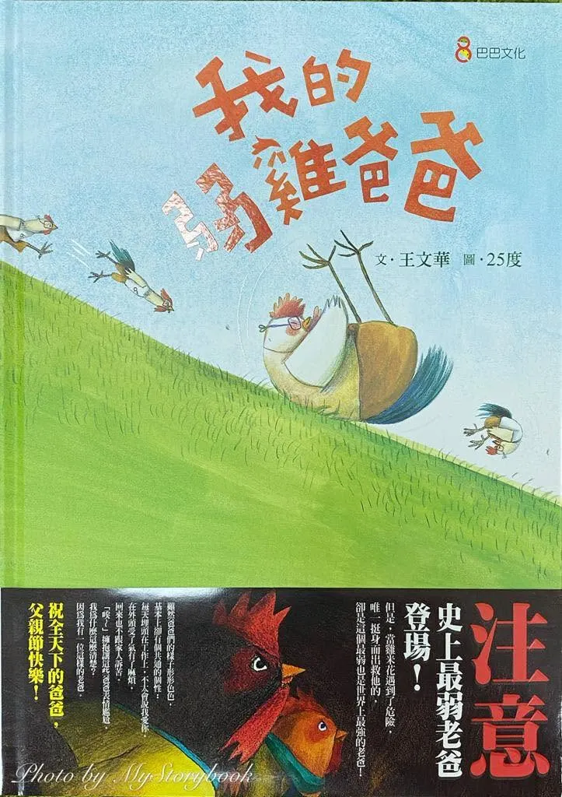

如果說七夕是屬於情人的日子，那麼八月，大概就是屬於爸爸的月份。上一篇，雞爸爸才剛寫完一封給鼠媽媽的七夕情書，回頭想想，八月都已經快過完了，好像也該留一點篇幅給「爸爸」這個角色，結果雞爸爸最近發現一件很有趣的事...
只要在網路上搜尋「雞爸爸」，除了偶爾會看到雞爸爸自己寫的文章之外，搜尋結果裡常常會出現一本書—王文華老師的《我的弱雞爸爸》。
第一次看到的時候，雞爸爸心裡還想：咦？是在叫我嗎？
人家是「弱雞爸爸」，我叫「雞爸爸」，中間只差了一個「弱」字，而且搜尋引擎還三不五時把我們兩個排在一起。到底是演算法出了問題，還是 Google 已經默默看透雞爸爸了？
於是在這個屬於爸爸的八月，雞爸爸決定認真來看看：這位「弱雞爸爸」，究竟有多弱？
結果查了一下才發現更巧。《我的弱雞爸爸》是王文華老師創作、25度繪圖的繪本，出版社當初就直接把它定位成「十二生肖×節日」系列裡的「生肖雞×父親節」。(誠品網)
好吧，看來演算法可能沒有弄錯，我們真的是同屬「雞爸爸事業部」的...
別人的爸爸什麼都會，我爸爸只會做娃娃？
故事裡的小主角叫做雞米花，雞米花身邊有幾個好朋友。
雞霸霸的爸爸會踢球，雞強強的爸爸愛游泳，雞壯壯的爸爸甚至還會開飛機。再看看自己的爸爸「雞爪東」…好像什麼都不會。
唯一擅長的事情，是在家裡踩著縫紉機，做一隻一隻的小雞娃娃，而且還不是隨便做做。
雞米花家的櫥窗裡擺滿爸爸做的小雞娃娃，可愛到連記者都跑來採訪。只是對雞米花來說，當身邊每個朋友都在說「我爸爸會這個」、「我爸爸會那個」，自己爸爸最厲害的技能卻是「做娃娃」，好像怎麼講都少了一點威風。(文化部-兒童文化館)
雞爸爸看到這裡，其實笑了一下。
因為這個場景好像很幼稚，可是想一想—我們小時候不也差不多嗎？
「我爸爸長得像秦漢。」「我爸爸很高。」「我爸爸寫字很漂亮。」「我爸爸是台長。」
孩子的世界裡，爸爸偶爾也會莫名其妙被拉進一場，自己根本不知道已經報名的：
「爸爸能力值大賽」。
更麻煩的是…長大當爸爸以後，雞爸爸才發現：這個比賽甚至沒有結束的一天...
只是後來不需要小孩幫忙比了，家長們自己就會比...
當了爸爸以後，技能樹突然長得像熱帶雨林
誰誰誰的爸爸會陪孩子運動、誰誰誰的爸爸很會露營、誰誰誰的爸爸還很會做飯...
別人的爸爸很會安排旅行、很會賺錢、會修水電、有人懂投資、有人拍照像攝影師，最好還要懂兒童發展、營養學、心理學、3C、汽車、保險……
還要隨時依照情境切換成心理諮商師、急診檢傷護理師、幼幼台主持人。
當爸爸以後發現，爸爸這個職業的技能樹，根本不是一棵樹，是一整片亞馬遜雨林。
而且最可怕的是，永遠都有人比你更會，所以看到雞爪東被其他爸爸一比較，頭低低走回家的畫面，雞爸爸反而有一點理解他。
很多時候，真正覺得自己「不夠好」的人，可能根本不是孩子，而是爸爸自己。
可是爸爸為什麼一定要會「爸爸該會的事」？
雞爸爸很喜歡《我的弱雞爸爸》的另一個地方，是雞爪東真正厲害的事情：縫娃娃。
如果今天角色交換一下，一位媽媽很會做布偶，大家大概不會覺得有什麼奇怪...可是換成爸爸坐在縫紉機前面，一針一線做娃娃，很多人的腦袋可能就會頓一下。
咦？這算是爸爸的專長...？
這本書後來也被收進 SDGs「性別平等」相關閱讀書單。(SDGs 兒童永續書房)
雞爸爸覺得這點其實很有意思，我們常常跟孩子說：「每個人都有自己的優點。」
「男生女生都可以做自己喜歡的事。」甚至最常說的就是「不要管別人怎麼想。」
可是輪到自己時，心裡其實還藏著很多偷偷沒有刪掉的設定。
爸爸應該堅強、爸爸應該會修東西、爸爸應該保護家人、爸爸最好膽子要很大。
爸爸好像就應該比較會那些「很爸爸」的事情，但誰規定爸爸不能坐在縫紉機前面做娃娃？而且還做得有夠好，好到記者都來了。
如果雞爸爸有一天真的做出一個作品做到記者跑來家裡採訪，管它是縫娃娃還是折紙鶴，我應該已經把那篇報導印出來裱框掛客廳了。
弱在哪裡？明明超強的好不好，只是那個「強」，剛好不是習慣拿來衡量爸爸的那一種。
最後故事還是沒有讓弱雞爸爸變成超級賽亞雞
故事來到雞窩村的運動大會，這大概也是雞米花最希望爸爸證明自己的時候。
結果雞爪東並沒有因為進入故事高潮，突然解鎖隱藏技能。
沒有什麼跑步跑到一半背景音樂響起，下一秒眼神發光，從最後一名一路超車。他還是那個不擅長運動的雞爪東，這反而是雞爸爸很喜歡的地方。
因為如果故事最後只是告訴孩子：「你看！只要爸爸努力練習，最後還是可以跑贏大家！」講到最後，標準其實根本沒有變，還是在告訴我們：你得把弱點變強，才值得別人肯定。但《我的弱雞爸爸》不是這樣。
不過當運動會發生意外時，一隻黃鼠狼盯上落單的雞米花。
那個跑不快、不會游泳、不會開飛機，平常還常常被笑的爸爸，卻在孩子真正遇到危險時，毫不猶豫衝出去擋在雞米花前面。故事最後甚至又繞回雞爪東最擅長的小雞娃娃，來了一個很童趣的反轉。(好故事)
看到這裡，雞爸爸突然明白：雞爪東從頭到尾其實都沒有突然「變強」，他還是他。
真正改變的，只有大家看他的眼光。
我們是不是也常常拿錯尺，在量一個爸爸？
雞爸爸看到這裡，開始想到自己。有了鼠姊姊和龍弟弟以後，雞爸爸當然也希望自己是一個「很厲害的爸爸」，最好什麼都知道。
孩子有問題可以回答、東西壞了可以修、可以帶小孩出遊、遇到事情不慌張。身體還要保持健康，最好再有點胸肌，因為鼠姊姊說喜歡男生有胸肌。
畢竟爸爸如果連自己都顧不好，以後還怎麼陪他們長大？
可是越當爸爸，越會發現一件事情：我們不可能什麼都會。
本來就有些事情雞爸爸很擅長、有些事情會做得一塌糊塗；有些時候明明查了一大堆資料，最後還是不知道怎麼辦；有時候孩子哭了，雞爸爸腦袋裡可以瞬間跑出兒童發展理論、情緒調節、九大氣質、依附關係…但鼠姊姊想要的卻只是一句：「爸爸抱抱。」
好，單純、簡單，然後把前面那些浮現的論文都從腦袋裡丟掉。
孩子最後記得的，不是爸爸最厲害的樣子
雞爸爸偶爾會想，等鼠姊姊和龍弟弟再長大一點，他們會怎麼跟別人介紹自己的爸爸？
雞爸爸腦中好像一片空白...
可是看完《我的弱雞爸爸》，雞爸爸忽然覺得，孩子最後真正記得的事情，也許比我們想像中簡單很多。他可能不知道爸爸工作上做過什麼，不會知道爸爸為了這個家擔心過多少事情，也未必記得爸爸半夜查了幾十篇資料，只為了搞懂他身上發生的一個小問題...
但是可能會記得—小時候很害怕的時候爸爸在旁邊、第一次去海邊爸爸在旁邊挖沙、過馬路的時候爸爸牽著他的手、難過時，雖然不見得懂得安慰，但願意一直陪在她身邊。
這些事情拿出來，都不像什麼了不起的爸爸技能，不會有人頒獎，履歷也沒地方可以填。不過孩子長大以後回頭看，或許這些才是他心裡真正記得的「爸爸的模樣」。

稱職的爸爸願意在關鍵時往前站一步!就超強!
所以看完《我的弱雞爸爸》，雞爸爸反而開始喜歡「弱雞爸爸」這個名字了。當爸爸以前，總覺得爸爸應該是家裡最強的那一個人。當爸爸以後才慢慢知道：爸爸其實也會害怕也會累，也有不會的事情，也會做錯決定，甚至有時候心裡根本沒有答案。
只是在孩子面前，努力讓自己看起來好像知道下一步該往哪裡走。
可是也許，孩子從來沒有要求爸爸成為超人。
雞米花最後看到的，也不是一個突然跑得飛快的爸爸，而是一個明明知道自己跑得不快，在孩子需要他的時候，還是朝著孩子跑過去的人。
雞爸爸忽然覺得：這大概就是「爸爸」最有意思的地方。
不是因為什麼都會，所以站在孩子前面，而是即使知道自己沒有那麼厲害，有些事情甚至真的很弱—需要我們的時候，我們還是會往前站一步。
所以，如果哪一天鼠姊姊或龍弟弟覺得：「我的爸爸好像也沒有很厲害嘛。」
雞爸爸想一想，好像也沒關係，反正雞爸爸本來就是雞，偶爾弱雞一下，非常合理。
只希望有一天他們長大回頭看，會記得：這隻雞不一定跑得最快，卻一直都在他們身邊。那麼，雞爸爸覺得—這個爸爸，應該就當得還不算太差...
致敬我在天上的父親，感謝您的教養，並且用一輩子守護我們，你的優秀，讓我們從小感到驕傲，也是我一輩子都追趕不上的典範，祝福您父親節快樂，給我最愛的爸爸！